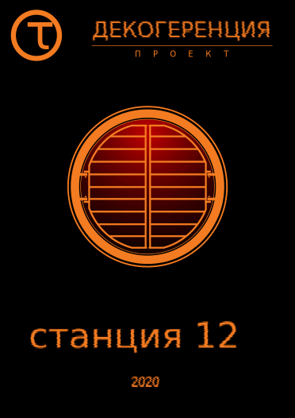

«Декогеренция» — это фанатский литературный проект, посвящённый вселенной серии игр Half-Life от компании Valve. Перед вами второй релиз проекта. Будем рады новым читателям и партнёрам.
Доступные форматы:
* документ PDF;
* файл html (перед вами);
* статья ВКонтакте.
Проект «Декогеренция» ВКонтакте: vk.com/project_decoherence.
Они нас всё ещё ловят —
Но здесь нас нет.
Но две дорожки из крови
Наведут на след.
ЖЩ — Вирус
-----------------------------
Джо мчался по узкой улочке что было сил, глотая пыльный тёплый воздух и чувствуя, как предательски слабеют шнурки в ботинках. Мэри бежала чуть впереди, показывая дорогу — удивительно бесшумно и пружинисто, не наступая на раскиданный тут и там мусор и, казалось, даже не оставляя следов на дорожной пыли. Их преследователи не отставали — топот сапог сзади доносился всё громче. Шёпотом умоляя небо, чтобы не поскользнуться на мусоре и не свернуть себе шею, Джо старался не отставать от подруги, но с каждой секундой резь в боку нарастала.
— Быстрее, быстрее! — отчаянно замахала Мэри руками, заметив, что Джо замедляет бег.
— Не могу я быстрее! — огрызнулся Джо и, поморщившись, схватился за бок. — Надо... Чёрт!
Раздался оглушительный звон разбитого стекла — из-под ноги Джо вылетела пустая бутылка, ударилась о бордюрный камень и разлетелась на кусочки. Этим звоном можно было бы переполошить весь район, но в заколоченных домишках по обеим сторонам улочки уже давно никто не жил. Мэри сердито прошипела:
— Осторожнее!
— Надо их... запутать, — выплюнув залетевшую в рот мошку, Джо обессиленно прислонился к ближайшему столбу. — Есть идеи?
— Здесь где-то должен быть проход, — Мэри лихорадочно озиралась вокруг. — Зелёный забор, зелёный забор... Сюда!
Беглецы метнулись к высокому облезлому забору, на котором кое-где ещё виднелась выцветшая зелёная краска. Пошарив рукой в траве у самой земли, Мэри дёрнула за незаметную проволоку — за забором что-то щёлкнуло, и одна из досок со скрипом отодвинулась в сторону. Не успев даже удивиться как следует, Джо влетел в открывшуюся дыру; Мэри нырнула вслед за ним, вернула доску на место и бесцеремонно пихнула своего спутника в бок:
— Что встал? Бежим!
— Ты уверена, что... — наспех подтянув ослабшие шнурки, Джо разогнулся и огляделся. Их занесло в какой-то тесный дворик — узкие дорожки, мощёные кирпичом, клумба с невысокой желтоватой порослью, полуразвалившееся крыльцо, утопающее в сорняках...
— Если повезёт, они пробегут дальше, к Десятой линии, — Мэри махнула рукой куда-то вдаль. — Давай через тот забор! Ну давай же!
Из последних сил вскарабкавшись по скрипучим прожилинам, Джо перевалился через второй забор. Как только девушка спрыгнула рядом с ним, с улочки донёсся громкий топот двух пар сапог. Прислушавшись, Мэри удовлетворённо отметила:
— Попались! Мы выиграли пару минут. Бежим!
— Может, отсидимся здесь? — Джо потёр саднящие ладони, в которых сидело уже с десяток заноз. — Не будут же они обыскивать весь район...
— Раньше не стали бы, а сейчас... Давай, давай!
Миновав детскую площадку с покосившимся грибком, настежь распахнутые ворота пустого гаража и лавочку под толстенным кряжистым тополем, беглецы вылетели в переулок и понеслись дальше. Неяркое солнце, полускрытое за слоистой дымкой, светило им прямо в глаза, но не слепило. Его лучи крались между стропилами домов с провалившимися крышами, скользили по заколоченным и разбитым окнам, лизали облупленные стены и покосившиеся заборы. Давно необитаемый переулок чем-то напоминал толпу измождённых, избитых и кое-как перевязанных людей. Вдали маячили на фоне неба многоэтажки центральных районов, ощетинившиеся лесом антенн, а над ними властно высилась громадная башня — в скользящем солнечном свете блестели тёмно-синим её щербатые бока и спускающиеся вниз, в город, толстые кабели. Вокруг вершины Цитадели робко бродили облака, и даже солнечный диск, висевший рядом с ней, выглядел так неловко, словно у него было меньше прав находиться на небосводе.
— Только бы сканеры не появились! — приостановившись, Мэри в отчаянии взглянула на небо. — Тогда точно не уйдём...
— Минуты через две появятся, не волнуйся, — мрачно заметил Джо. — Куда дальше-то?
Перед ними был небольшой пятачок, где переулок расширялся и раздваивался — одна улочка шла дальше, в сторону Цитадели, а другая под острым углом уходила влево. Прямо на беглецов неприветливо таращился покосившийся таксофон на стойке с разбитым козырьком; на углу торчала ржавая водяная колонка, возле которой валялось ведро без дна. Ближайшие заборы, сколько хватало глаз, были густо затянуты вьющейся зеленью. Мэри наморщила лоб:
— Плохо помню это место...
— Тоже мне проводник, — проворчал Джо, поймав виноватый взгляд подруги, и тут его глаза остановились на ржавом остове автомобиля, лежавшем возле забора. — Стоп, это что, Суходольная?
— Кажется, да...
Джо победно хлопнул себя по лбу:
— Вспомнил! Сюда!
Шаркнув стёртыми подошвами по земле, Джо первым влетел в узкий, меньше метра, лаз между заборами. Мэри дёрнула его за рукав:
— Джо, постой!
— Это самый короткий путь, — подёргав толстые плети хмеля, перегораживавшие проход, Джо нахмурился и достал нож. — Сможем вырулить прямо к Хлебной, а оттуда через гаражи...
— Там же нет выходов в каналы!
— Есть одна... старая лазейка, — процедил Джо, орудуя ножом. Воздух наполнился сильным запахом хмеля. — Главное, не привести туда хвост... Помоги-ка!
Мэри отодвинула в сторону ворох обрезанных стеблей:
— Ты не рассказывал про неё...
— Не думал, что так далеко заберёмся. Чёртов хмель... А-ах!
Запутавшись ногой в плетях у самой земли, Джо нелепо взмахнул руками и, к ужасу Мэри, растянулся на земле, вывалившись из прохода на соседнюю улицу. Девушка бросилась к нему:
— Осторожнее!
Сплюнув песок, скрипящий на зубах, Джо приподнялся, потёр ушибленную ногу, поднял глаза и замер. В двадцати метрах от них неподвижно стояли, перегораживая улочку, две тёмные фигуры — белые маски противогазов, бронежилеты с высокими воротниками, повязки на рукавах, высокие чёрные сапоги...
— Джо!!! — отчаянно взвизгнула Мэри.
Дубинка в руках ближайшего ГО-шника ощерилась синим огнём. Забыв про ногу, Джо одним прыжком очутился на ногах и, больно схватив Мэри за плечо, рванул вместе с ней к ближайшему углу. Вслед им донёсся громкий хрип вокодера: «Нарушители обнаружены, код десять-семьдесят три!» — и сразу вслед за этим в забор позади беглецов врезалась пуля.
— Какого чёрта?! — пропыхтел Джо, то и дело виляя, чтобы не напороться на ветки, несущиеся навстречу. — Мы же оторвались!
— Откуда я знаю! Что теперь делать?
— Сматываться! Сюда!
Беглецы сделали очередной крутой поворот — поношенные башмаки скользнули по асфальту, поднимая облачка пыли. Над головами просвистело ещё несколько пуль, и раздался новый хриплый возглас: «Повторяю, у нас десять-семьдесят три, нужна поддержка с воздуха!»
— Неужели всё было зря, Джо?
— Если успеем, не зря! Быстрее, быстрее, уже почти добрались!
Свернув за очередной угол, они понеслись мимо длинного каменного дома в форме буквы «Г». В конце переулка виднелась белая стена с заколоченным окном и дверью, забитой досками. Мэри всплеснула руками:
— Джо, это же тупик!
Подлетев к сетчатой калитке между домами, Джо рванул её на себя:
— Спокойно... Твою мать!!!
В проушинах калитки висел новенький увесистый замок. Джо крепко выругался и сплюнул наземь; Мэри, бледнея, прислонилась к стене дома. Первый ГО-шник уже приближался к ним, держа нарушителей на прицеле:
— Цель окружена, код ноль! Руки вверх!
Джо и Мэри мрачно переглянулись, подняли руки... и тут рядом с ними с треском разлетелись в стороны доски, загораживавшие дверной проём. В полумраке дома шевельнулась сутулая кожистая фигура, сверкнул зелёный свет, и в грудь метрокопа с оглушительным треском вонзилась зелёная молния. ГО-шник рухнул на землю, словно у него внезапно исчезли все кости в ногах, и откинулся на спину. На груди бронежилета дымилась огромная круглая дыра.
Без раздумий Джо кинулся к убитому полицаю и выхватил из обмякшей руки пистолет. Быстрее, быстрее, ещё метр до укрытия — и, как только он упал за потрескавшееся кирпичное крыльцо, из-за угла выбежал второй ГО-шник с включённой дубинкой:
— Одиннадцать-ноль-восемь, обнаружен ворт без блокира...
Голос оборвался тревожным писком рации и звуком падающего тела — пуля попала точно в правый глаз.
— Готово, — выдохнул Джо, опустив руку с пистолетом, который вдруг стал вдесятеро тяжелее. В ушах все ещё звенело — то ли от выстрела, то ли от непривычной тишины, наполнившей район. Мэри, всё ещё прижимаясь к стене, расширенными глазами смотрела на трупы, валяющиеся посреди дороги. Молчание прервал отрывистый гортанный голос:
— Нам надлежит уходить. Надзор не оставляет нападения на патрули безнаказанными.
Сделав над собой усилие, Джо поднялся на ноги и бросил на вортигонта хмурый взгляд:
— Ты-то зачем сюда прибежал? Я же говорил — сиди на станции и не отсвечивай!
Вортигонт широким жестом обвёл весь переулок:
— Вы нуждались в нашей помощи.
— Тебе жить надоело? В вортов стреляют сразу на поражение!
Вместо ответа его встретил лишь невозмутимый взгляд огромного красного глаза.
— Джо, некогда! Нас уже ищут! — вмешалась Мэри. — Может, бронежилет заберём?
— К чёрту, снимать слишком долго. Бери магазины и второй ствол. Да, ещё...
Подобрав с земли какую-то палку и подойдя к соседнему забору, Джо выломал из него пару досок:
— Теперь порядок. Если они будут искать нас за этим забором, им придётся обойти с полсотни домов. Уходим!
Когда возле дома с выбитой дверью, тихо урча, появился первый сканер, переулок был уже пуст. Поигрывая передними панелями и тихонько жужжа, сканер пару раз облетел переулок туда и сюда, затем набрал высоту и направился к центру города. О произошедшем напоминали лишь тела двух метрокопов, валяющиеся посреди дороги, и обломки досок.
***
— Да, сыровато здесь, — Тед потянул носом и поморщился. Полутёмное помещение освещалось всего двумя тусклыми светильниками — в их неверном свете на облупленных и изрисованных стенах явственно выступали следы влаги. Возле самого пола чернели зарешеченные отверстия, откуда тоже тянуло сыростью. — Неужели вы тут постоянно живёте?
— Время от времени меняемся с другими станциями, — откликнулась Ким, колдовавшая над рацией на шатком столике у стены. — Это бывший отстойник, тут нельзя надолго засиживаться. Надышишься всякой гадости — потом будешь лечиться полгода...
С дивана, где сидел Эрдин, донёсся саркастический смешок. Ким с неудовольствием подняла голову от своего занятия:
— Что ещё?
Эрдин состроил нарочито постное лицо:
— Позавчера, в убежище возле Площади Восстания, меня средь бела дня попытались съесть крысы. Вчера, когда мы сидели в подвале педколледжа, к нам сверху чуть не провалился метрокоп. Интересно, чего мне ждать от этой дыры?
— А ты думал, что попал в гостиницу «Метрополь»? — парировала Ким, снимая с рации кожух и нацеливаясь отвёрткой куда-то вглубь. — Запомни: чем гаже дыра, тем в ней безопаснее.
— Безопаснее? — хмыкнул Эрдин. — Вот эта тряпка на решётке — это безопасно?
— Это же альянсовский тент? — Тед подошёл к проёму в передней стене и с удовольствием пощупал плотную чёрную ткань. — Я такие видел, отличная штука против сканеров!
— Да, Дэн недавно раздобыл. Теперь мы можем смело сидеть при свете, а не впотьмах, как раньше, — Ким кивнула на светильник, висящий над диваном, и неприязненно глянула на Эрдина. — Впрочем, некоторым с дивана виднее, да?
Эрдин открыл было рот, чтобы возразить, но вдруг поёжился и вскочил с дивана как ужаленный. Тед недоумённо взглянул на него:
— Что?..
— Вода за шиворот капает, вот что! Какой идиот поставил диван под эту трубу?!
— Тише! — Ким покосилась в сторону человеческой фигуры, растянувшейся на тощем матрасе у стены. — Дай Дэну выспаться, он всю ночь дежурил!
— Надоело! — полушёпотом вспылил Эрдин. — Я уже третий день гоняю крыс по этим грёбаным каналам! Сколько ещё мне сидеть в этой дыре и ковыряться в ваших коробках?
— Столько, сколько надо! — осадила его Ким, со щелчком надев на рацию кожух. — По всему городу идут рейды, а ему, видите ли, не сидится на месте!
— Я только и делаю, что сижу на месте! Интересно, мы доберёмся до вашей базы хотя бы через неделю?
— Будешь валять дурака — вообще не доберёшься! Ты что, по кутузке соскучился?
— И то верно, — поддакнул Тед. — Если комбайны тебя достанут из каналов и примут за подпольщика, простым штрафом не отделаешься. Расслабься, приятель, всё равно проводники ещё не пришли.
Он дружески похлопал Эрдина по плечу — тот неприязненно дёрнулся, но смолчал и лишь сильнее насупился. Рядом с круглолицым и добродушным Тедом Эрдин выглядел ещё угрюмее, чем сам по себе.
— Вот, готово. Давайте пока продолжим разбирать запасы, — неловко попыталась разрядить обстановку Ким, но тут рация под её руками мигнула красным огоньком и просипела:
— Станция двенадцать, я пост Ферми! Вы там закончили с рацией?
— На связи, Ферми. Что там у вас?
— Снова рейд. У квартала три машины, инспектируют жилые блоки, — простуженный голос дозорного сипел так, что еле можно было разобрать слова. — Двоих вывели к подъезду, но, кажется, это не наши.
Ким сокрушённо покачала головой:
— А что с беженцами? Мы ждём ещё двоих, мужа и жену...
— Уже идут. Мы их отправили в обход, чтобы не нарвались на рейд. Должны появиться со стороны железки, готовьтесь принять через полчаса.
— Спасибо, Ферми.
Рация замолкла. Ким повернулась к беженцам:
— Ну, вы сами всё слышали. Придётся ждать ночи.
Лицо Эрдина вытянулось:
— Весь день тут сидеть?
— Хватит! Днём я вас со станции не выпущу! — отрезала Ким. — Отправитесь, как стемнеет... Кстати, куда наши проводники подевались?
Она выудила из кармана огромные наручные часы без ремешка, протёрла треснутое стекло краем синей блузы и пригляделась к стрелкам:
— Опаздывают уже на полчаса. Только бы не попались!
— С ними же ворт, — неуверенно вставил Тед. — Думаю, всё обойдётся.
— Надеюсь... Чёрта с два я бы отправила их туда, если бы не срочность! — Ким озабоченно вздохнула. — Не понимаю, почему мы? Нельзя было послать кого-нибудь с восьмой или шестой? Там хоть оружие есть!
— Оружие? Надо же! — саркастически усмехнулся Эрдин, снова опускаясь на краешек дивана. — За три дня в подземке я видел только один пистолет, и тот без патронов.
Ким устало подняла глаза к потолку:
— Господи, Эрдин... Стоп, мы же новости пропустили! Может, хоть кусочек услышим?
Снова склонившись к рации, она покрутила ручку настройки. Сквозь помехи постепенно пробился знакомый голос — звучный, властный и одновременно вкрадчивый:
— ...Как это неоднократно случалось за последнее время, повод для моего комментария нельзя назвать радостным. Всем вам хорошо известно, что в нашем городе участились случаи преступных посягательств на объекты инфраструктуры. Не стали исключением и последние несколько дней — в этот раз атакам злоумышленников подверглись пункты выдачи продовольствия. Пострадало несколько десятков пищевых раздатчиков, было похищено несколько сот пищевых единиц. Сотни добропорядочных граждан остались без куска хлеба.
В настоящий момент всё пострадавшие пункты закрыты, идёт их восстановление и оценка нанесённого ущерба. Для ликвидации последствий были задействованы продовольственные резервы, часть пострадавших временно прикреплена к другим пунктам. Однако масштабы происшествия слишком значительны, чтобы оно прошло безболезненно для жителей — многие граждане всё ещё ждут своей очереди, чтобы получить положенные им по закону пищевые рационы. Впрочем, я вряд ли сообщу вам что-нибудь новое, если продолжу цитировать последний выпуск новостей.
Спешу отметить, что большинство лиц, причастных к этому беспрецедентному по своим масштабам нападению, уже установлено — и результаты расследования в очередной раз оказываются предсказуемыми. Стоит ли говорить, что за этой диверсией стоят те же силы, что и за большинством нерадостных событий, имевших место в последние годы? Увы, организованная преступная группировка, члены которой называют себя громким словом «сопротивляющиеся», несмотря на все наши усилия, продолжает свою подрывную деятельность — и, что прискорбнее всего, её идеи находят положительный отклик среди определённой части нашего общества. Признаюсь, я констатирую этот факт с большим сожалением и не могу не испытывать определённого чувства вины за происходящее. То, что организация планового распределения продовольствия может быть выведена из строя усилиями кучки асоциальных элементов — это моя серьёзная недоработка как управленца. Но ещё печальнее то, что наше общество, как никогда близкое к идеальному, не в состоянии самостоятельно справиться со зреющей внутри него угрозой.
Есть ли необходимость напоминать вам обо всех неудобствах, которые все мы ежедневно вынуждены испытывать в связи с происходящим? Полагаю, что нет. Однако я вынужден заранее предупредить вас — если текущее положение дел сохранится, ограничительные меры могут быть расширены ещё сильнее, вплоть до введения режима чрезвычайного положения во всём Секторе Семнадцать и задействования сверхчеловеческого отдела Надзора внутри периметра города. Это крайняя мера, к которой я буду вынужден прибегнуть с огромным неудовольствием, однако смею вас заверить — это небольшая плата за стабилизацию ситуации. Как показали недавние события в Рейвенхольме, иногда меры, на первый взгляд слишком жёсткие, оказываются единственно адекватными и действенными.
Повторюсь, я осознаю, какие обязательства накладывает на меня моя должность, и не перекладываю ответственность за произошедшее ни на своих подчинённых, ни на население. Однако серьёзность ситуации вынуждает меня просить вас о помощи. Если вы стали свидетелем подготовки к преступлению, сокрытия следов преступления, укрывательства преступников, или же располагаете иными сведениями, которые могут помочь в пресечении незаконной деятельности — не оставляйте эту информацию при себе. Немедленно сообщайте обо всех фактах и подозрениях в ближайшее отделение Гражданской Обороны по месту вашего жительства или работы, патрулям или дежурным.
Не поддавайтесь порывам жалости и снисхождения — это тягчайшая разновидность самообмана. Помните — люди, которых вы считаете своими доброжелателями, могут оказаться обычными фанатиками, исповедующими шизофренические абстрактные идеи. Эти субъекты, мнящие себя спасителями человечества, сознательно поставили себя вне человеческого общества. Своим существованием они не приносят вам ни малейшей пользы, но считают себя вправе пользоваться вашими ресурсами. Они нарушают отлаженные механизмы распределения благ, безжалостно уничтожают то, что было создано и взлелеяно вашими руками. Они — главный источник вреда для всех законопослушных граждан Земли.
Помните — наши силы обеспечения правопорядка напряжённо работают круглыми сутками, чтобы сохранить то немногое, что мы успели построить на развалинах старого мира. Помогите им, если можете. Проявите здоровую гражданскую сознательность. Защитите себя и то, что вам дорого, от хаоса, который грозит вырваться наружу.
— Это был специальный комментарий администратора Земли доктора Уоллеса Брина. Следующий выпуск новостей состоится...
Ким нетерпеливо щёлкнула тумблером, оборвав голос диктора на полуслове, и озабоченно покачала головой:
— Да, Тед, вы теперь знаменитости! Значит, ты уже под подозрением?
— Пока нет, но у них много зацепок, — Тед почесал затылок и опустился на диван рядом с Эрдином. — Вот и решил смыться из города, пока они там раскачиваются. На базе Илая я больше пригожусь, а здесь мне больше нечего делать. Теперь и без меня справятся.
— Вы собираетесь ещё раз это провернуть? — изумилась Ким, присаживаясь на скрипучий стул. — А это не слишком опасно?
Тед пожал плечами:
— Повторить не получится — комбайны не настолько дураки. Впрочем, это не моя забота. Я просто собрал пару приборчиков, а уж как их применить, пусть ребята думают сами. Может, придумают что-нибудь новое...
— Если, конечно, этих ваших «ребят» не сдадут с потрохами соседи, — язвительно вставил Эрдин.
— Тоже верно, — помрачнел Тед. — Доктор Брин, как и всегда, произнёс блестящую речь. Не сомневаюсь, что она найдёт своего слушателя.
— Эрдин, не каркай. Если бы все друг друга сдавали, подземка не просуществовала бы и недели, — Ким взяла со стола толстую потрёпанную тетрадь и раскрыла её. — Все прекрасно знают, что эти припасы предназначены для нуждающихся...
Эрдин снова хмыкнул:
— Гениально! Кормить подпольщиков, обкрадывая простых людей!
— Кто тебе такую чушь наплёл, дружище? — удивился Тед. — Ты что, решил, что мы выкрали обычные рационы?
— А разве нет?
— Конечно, нет. Мы с ними вообще не связываемся.
— Почему?
— Потому что каждая базовая пищевая единица ещё при фасовке привязывается к конкретному гражданину. Получается, брать можно только невостребованные рационы — на умерших, арестованных, ушедших в подполье и так далее. Как всё это учесть? Правильно, никак.
— И вы смогли добыть из раздатчиков премиальные пайки? — поразилась Ким. — Их же выдают только при наличии баллов лояльности!
— Да кому нужны ваши баллы! — отмахнулся Тед. — Чтобы получить хоть что-то из раздатчика, пришлось бы сломать аутентификацию гражданина. Я что, похож на маньяка, чтобы этим заниматься?
— И что же вы сделали?
— Ничего особенного. Фургон с провизией останавливается у раздатчика, рабочие загружают пайки в бункер и едут к следующему раздатчику. Кто мешает им придержать парочку порций для нужд их угнетённых братьев и сестёр?
Тед сунул руку в коробку, стоящую на полу перед диваном, и вытащил оттуда объёмистую пачку в блестящей упаковке с синей полосой. У Ким отвисла челюсть:
— У вас есть люди на развозе продовольствия?!
Тед хитро прищурился:
— Наши люди есть везде. Я сделал для ребят ручной сканер, чтобы удобнее было отбирать пайки по номерам. Сидишь себе в кузове да сканируешь — чего проще? Потом отводишь фургон в нужное место и сгружаешь урожай. Главное, чтобы ГО-шники не застукали за этим делом.
— Бред какой-то, — нахмурился Эрдин. — Разве раздатчик не проверяет, что в него загрузили?
— По номерам — нет. Проверяется только общее количество, а этот датчик, как оказалось, можно обмануть чуть ли не обычной булавкой. Я сам удивился.
Эрдин с сомнением покачал головой. Тед усмехнулся:
— Вот закроют сейчас эту дыру, и придётся ребятам поломать головы... Ну ничего, пусть ГО-шники пока отъедаются — тяжелее будет за нами гоняться!
— Между прочим, доппайки не только ГО-шникам выдают, — не сдавался Эрдин. — Я тоже их получал, когда работал. Получается, вы и честных работяг попутно ограбили!
Ким наморщила лоб:
— Ты, кажется, на районной подстанции работал?
Эрдин угрюмо кивнул:
— Угу. Латал конвертеры энергии чем придётся, получал премиальный паёк раз в месяц. А самый последний так и не получил, потому что раздатчик по вашей милости опечатали. Возможно, мой рацион как раз в этой коробке лежит!
— Мы тут ни при чём. Чтобы проверить содержимое бункера и восстановить датчик, нужно от силы минут десять, — спокойно заметил Тед. — Они просто хотят настроить людей против подпольщиков, поэтому и держат пункты опечатанными. А насчёт твоего пайка... что обычно тебе попадалось?
— Сушёные овощи...
Тед внимательно вгляделся в пачку, которую держал в руках:
— Так, где тут номер?.. Один-шесть-девять... девять-четыре... один-два-четыре, девять-шесть. Не пообедать ли нам этим пайком? У него как раз срок годности истекает.
— Можно, время уже подходящее, — согласилась Ким. Захлопнув тетрадь, она вытащила из кармана изрядно помятую алюминиевую ложку. — Правда, ложка всего одна, придётся есть по очереди. Эрдин, ты первый.
— Открывай, — подмигнул Тед.
Недоверчиво взвесив в руке паёк, Эрдин потянул за отстающий краешек фольгированной крышки, взглянул на содержимое упаковки и обомлел:
— Мясо?!
— Нет, гвозди, — усмехнулся Тед. — Угощайся, только нам оставь...
— Чёрт возьми! — Эрдин, не веря своим глазам, подцепил ложкой кусок холодной тушёнки. — Я даже не помню, когда последний раз мясо видел!
Тед снова усмехнулся:
— Неудивительно. Мясные пайки выдают постоянно только метрокопам и некоторым осведомителям. Так кого, говоришь, мы ограбили? Работяг?
Эрдин, уже набивший рот тушёнкой до отказа, промолчал.
— Приятного аппетита, — пожелал ему Тед. — Жалко, что у вас подогреть не на чем, было бы ещё вкуснее...
— Ну ты и голова, Тед! — восхитилась Ким. — Не зря Илай приказал вас с Эрдином вперёд списка пропустить! Вы точно ему пригодитесь!
— Если у них там найдётся нормальный инструмент, я буду на седьмом небе, — заверил Тед. — До смерти надоело паять гвоздём вместо паяльника... А много вообще беженцев?
Ким снова глянула в тетрадку:
— Раньше проводили человек десять в день, но сейчас пришлось притормозить — ГО свирепствует. Впрочем, в Мезе говорят, что скоро подземка станет не нужна. Они там якобы придумали какой-то другой путь. Подробностей, правда, не знаю...
Откуда-то сверху раздался шорох, звук чьих-то шагов, а затем — короткий условный стук. Беженцы беспокойно дёрнулись, но Ким жестом успокоила их:
— Спокойно, это свои!
Взобравшись по лесенке у боковой стены, она постучала в ответ. Деревянный ящик, закрывавший дыру в крыше, сдвинулся, и внутрь тёмного помещения станции упали лучи неяркого солнца, осветив красную косынку на голове Ким.
— Вас только за смертью посылать! Как всё прошло?
— Не без приключений, — усмехнулся Джо, спускаясь по лестнице.
Ступив на земляной пол, он вынул из кармана пистолет, два магазина и бросил их на стол рядом с рацией. Лицо Ким изменилось настолько, что было заметно даже в полумраке станции:
— Была погоня?!
— Да, — рядом с Джо мягко спрыгнула Мэри. — Мы едва ушли.
— Надеюсь, вы не привели хвост?
— Нет причин опасаться этого, — раздельно проговорил гортанный голос; вортигонт аккуратно придвинул ящик обратно и спустился по лестнице. — Преследователи встретили свою судьбу в глубине закрытого района. Воздушной разведке не удалось обнаружить нас.
— Может, Дэна разбудить всё-таки? — Ким с сомнением посмотрела на спящего.
— Не надо, пусть спит, — Джо стащил носки и башмаки, заставив Эрдина недовольно поморщить нос, опустился на свободный матрас и с удовольствием вытянулся во весь рост. — Но мы побегали не зря. Мэри, расскажи!
— В том домике на территории механического завода находится станция управления синтетами, — Мэри села на свободный стул и принялась разуваться. — Судя по размеру антенны, она целиком накрывает пару-тройку районов. Мы бы рассмотрели её получше, но нас спугнул патруль.
— Значит, скоро страйдеров на улицах станет ещё больше, — вставил Тед, принимая от Эрдина вскрытый паёк и обтирая ложку носовым платком. — А то и чего-нибудь поинтереснее...
Ким покачала головой:
— Плохо дело. Ладно, сообщим в Восточную Чёрную Мезу, там что-нибудь придумают. Перекусите, может?
Джо закатил глаза:
— Подожди ты с едой! У меня от беготни желудок с печенью перепутались, кажется. И ноги отваливаются...
— Тренироваться нужно больше, — пошутила Мэри, перешнуровывая потрёпанные кеды.
— Кто ж знал, что нам придётся пять километров по закрытому району петлять? — фыркнул Джо. — Ты-то курьер, ты бегать привыкла, а я еле дотянул...
— Ладно, отдыхайте пока, — вмешалась Ким. — Мы ждём ещё двух беженцев, но раньше вечера всё равно выводить никого нельзя. Сами видите, что творится...
Её перебила внезапно ожившая рация, хриплым голосом прокаркавшая:
— Станция двенадцать, вы на связи?
— На связи, говорите!
— Говорит пост Дирак. С автобазы выехала колонна в вашу сторону — грузовики с топливом и два БТР. Куда они направляются, не знаю, сегодня рейды идут повсюду. Но будьте начеку!
— Спасибо, Дирак! Удачи вам! — выключив рацию, Ким задумчиво поправила косынку. — Ну и денёк... Вы точно не наследили нигде?
— Исключено, — Джо со вздохом поднялся и уселся на матрасе, прислонившись к стене. — Мы ушли со всеми предосторожностями, через старый коллектор. Хвоста не было... А это что?
Снаружи, откуда-то издалека послышался громкий звук — тревожный, короткий, дребезжащий, с нервным металлическим призвуком, словно кто-то пропустил череду искр через гигантский электрический разрядник. Над городом повисло гнетущее эхо, словно от раскатов грома, и когда оно затихло, звук повторился вновь. Ким настороженно подняла голову, вслушиваясь в звуки. Эрдин моментально выпрямился на диване и нервно заозирался. Тед слегка поёжился:
— Что-то комбайны расшумелись сегодня.
— Это не обычный рейд, — Джо поднялся и стал поспешно натягивать ботинки. — С утра я кое-где слышал сирены, но это...
Вортигонт недоумевающе моргнул всеми глазами одновременно:
— Сирена Цитадели? Это вызывает удивление...
— Надо выяснить, что у них там творится, — Ким снова взглянула на часы. — Джо, идите в контейнер. Скоро могут появиться Дженкинсы, их нужно встретить. Они должны прийти со стороны грузовой станции.
Джо кивнул и вместе с вортом направился к трубе, служившей выходом.
— Что происходит? — не выдержал Эрдин.
Ким открыла было рот, но её перебил громкий возглас — Джо вылетел из трубы, в которой только что скрылся, бледный как полотно:
— Цитадель раскрывается!
— Что? — повернулась к нему Ким.
— Ты что, шутишь? — Тед усмехнулся. — В последний раз люки Цитадели открывались лет десять назад!
— Какие шутки! — Джо всплеснул руками. — Уже рёбра видно!
Тед приподнялся с дивана:
— Рёбра?!
— Не может быть... — выдохнула Ким. Бледнея на глазах, она бросилась к трубе, но тут от стены, где спал Дэн, донеслось хриплое:
— Отставить!
Ким застыла как вкопанная в метре от трубы. Тед медленно опустился обратно на диван.
— Далеко собрались, а? — Дэн натянул свои башмаки и с кряхтением поднялся на ноги. — Всем сидеть внутри и не высовываться! Подпольщики, мать вашу...
Проковыляв нетвёрдой со сна походкой мимо оторопевших товарищей по станции, он подошёл к лестнице; вскарабкавшись наверх, чуть отодвинул ящик и, прижавшись щекой к бетону, долго вглядывался в щёлку между ящиком и стеной. Медленно спустился вниз, почесал неопрятную чёрную щетину на подбородке:
— Значит, так. В Цитадели полная боевая готовность. Что там стряслось, выяснять будем позже, а сейчас...
Его глаза остановились на Джо, всё ещё бестолково стоящем возле трубы:
— Джо, бери своего приятеля и марш в контейнер. Если появятся беженцы или кто-нибудь ещё, шли их сразу сюда, чтобы в открытую не шатались... Мэри, дуй на следующую станцию, проверь, что творится в каналах. На рожон не лезьте, шевелите мозгами по ситуации. Ну, что встали?
Мэри бросилась вон. Джо сделал знак вортигонту, и оба нырнули в трубу следом за ней. У Эрдина был такой вид, будто его сильно укачало:
— Может, нам с Тедом лучше уйти, пока снаружи спокойно?
— Чтобы вас взяли и накрыли всю станцию? — Дэн смерил его недружелюбным взглядом. — Сиди где сидишь, парень.
— Я просто хотел...
— Хотеть будешь, когда из подземки выйдешь. Заткнись, последний раз предупреждаю. Я даже во сне твоего нытья наслушался.
Эрдин оскорблённо замолчал. Подойдя к решётке, Дэн озабоченно поправил тёмную ткань:
— Говорил же...
Не договорив, он вдруг предостерегающе поднял руку. Сирена наконец стихла, и теперь за решёткой явственно слышалось мерное низкое жужжание и тихий электронный стрёкот. Ким еле слышно выдохнула:
— Сканеры!..
— Что... — открыл было рот Эрдин, но перед его носом моментально вырос внушительных размеров кулак Дэна:
— Молчи, дубина!
В этот миг со стороны лестницы что-то негромко звякнуло, словно о металлическую ступеньку что-то ударилось, и Тед вдруг заметил краем глаза, как возле стола упал и покатился по полу небольшой металлический цилиндрик.
— Глаза!!! — заорал Дэн что есть сил.
Шестым чувством поняв, что сейчас произойдёт, Тед бросился лицом в диван, вжимаясь в отсыревшую обивку и одновременно затыкая пальцами уши. Краем глаза он заметил, как Дэн толкнул Ким в плечо и они оба упали за пирамиду из коробок, а Эрдин так и остался стоять посреди комнаты, озираясь по сторонам. В следующую секунду раздался хлопок, и у Теда кошмарно зазвенело в ушах. Отлепив лицо от дивана, он мельком успел увидеть лёгкий дымок на месте взрыва гранаты и высокие сапоги, приближавшиеся к нему; затем последовал неслышимый удар по спине и судороги от разряда, заставившие Теда снова уткнуться носом в диван. Его рывком подняли на колени, протащили пару метров, бросили на грязный пол рядом с остальными и пнули в сгиб локтя. Зуд в руке смешался со звоном, наполнявшим голову — Тед всё ещё был лишён слуха и не понимал, что от него хотят.
— Руки за голову, тебе говорят! — хриплый голос ГО-шника наконец прорвался сквозь звон в ушах, словно через толстое одеяло. Тед послушался, не дожидаясь очередного тычка дубинкой. — Зона зачищена, задержано четверо подозреваемых.
— Обыскать помещение! — отозвался другой голос. — Что в этих коробках?
Послышался жалобный треск дерева — ГО-шник отшвырнул в сторону один из стульев:
— Аптечки и батареи.
— А в этих?
— Пищевые рационы, премиальные. Примерно сотня штук.
— Премиальные? Что-то подозрительно. Покажи-ка мне этих типов... Вот этого, в белой рубашке!
Сильный рывок за шиворот — и перед расплывающимся взором Теда возникла белая маска метрокопа:
— Кого я вижу! Один в один по утренней ориентировке! Что, приятель, припозднился с бегством?
Тед промолчал.
— Ладно, в участке поговорим, — метрокоп сделал знак, и Тед снова рухнул на пол. — Остальных тоже пакуем, надо проверить по спискам беглых. Продовольствие забрать как вещдоки. Ещё что-нибудь нашли?
— На столе какая-то рация и... Да у них тут стволы! Две штуки, плюс двойной стандартный боекомплект. Один магазин неполный.
— Так вы ещё и налётами на патрули занимались! — удовлетворения в голосе полицая не мог скрыть даже вокодер шлема. — Отлично, отлично, шеф будет доволен. Рацию прихватите, проследим за эфиром... Что это на решётке — маскировочный тент?
— Да, и ещё один был в трубе.
— Снять оба! Неудивительно, что сканеры ничего не увидели...
Тед невольно зажмурился — в глаза через ободранную решётку ударил дневной свет. Повернув голову, он увидел синий воротник и всклокоченные волосы, очевидно, принадлежавшие затылку Дэна. Рядом с ними остановились сапоги ГО-шника:
— Надзор, говорит патруль два-пять-семь. Обнаружено и зачищено подпольное убежище нелегалов, задержаны четыре человека... Да?.. Что?.. Чёртова связь! Продолжать обыск!
Слегка скрипнула лестница — по-видимому, метрокоп поднялся на крышу станции. Сзади слышался скрип сапогов другого ГО-шника, который, судя по звукам, разбрасывал матрасы и ящики. Через решётку Тед увидел снаружи ещё нескольких полицаев — повесив дубинки на пояса, они разглядывали разрушенный мост через канал. Вдруг они нервно дёрнулись и подняли головы — откуда-то сверху раздался холодный женский голос, словно заговорило само хмурое небо:
— Внимание отрядам Гражданской обороны. Обнаружено уклонение от надзора. Отреагировать, изолировать, допросить.
— Сколько их? — шепнул сзади Дэн. Тед повернул к нему голову:
— Не знаю.
— Было бы их чуть поменьше... — шепнул Дэн. — Целый батальон, и все со стволами. Чёрт...
Снаружи раздался шум лопастей — над станцией пролетел вертолёт. По ступенькам лестницы снова застучали сапоги ГО-шника:
— Отставить обыск! Надзор дал код «отменить, закрепиться, наблюдать»!
— В чём дело?
— Отклонение численности и беспорядки с вооружённым сопротивлением. Вы двое — на крышу, разверните огневую точку. Средства сдерживания уже готовы.
— Что с задержанными?
— Этого, в белом — в участок, остальных в расход. Сейчас некогда с ними возиться.
Раздался вопль Эрдина — впервые за всё время:
— Нет! Нет! Я буду сотрудничать! Не убивайте меня!
— Заткнись, ты... — негромко процедил Дэн.
— Молчать!
Снова протрещала дубинка, и крики Эрдина сменились тихими всхлипываниями. Тед почувствовал, как его локтя касается локоть Дэна:
— Парень...
Тед снова повернул голову к начальнику станции.
— В трубе вверху есть красный фонарь. Это сигнал провала станции... — лица Дэна, скрытого в тени его собственных рук, почти не было видно, лишь где-то глубоко поблёскивали белки глаз. — Включи его, чтобы другие сюда не совались. Видимо, подземке пришёл конец...
— Как?
— Там тумблер... сбоку... Найдёшь?
— Найду.
— Разговорчики! — в спину Теду снова ткнулась дубинка, выдавив из его глаз искры. — Ты, ты и ты — встать! Руки за спину! Марш к лестнице! По одному — марш наверх!
Тед зажмурился, вжимаясь лицом в землю, чтобы ничего не видеть. Звон в ушах некстати отступил — он слышал каждый звук и против своей воли видел мысленным взором, как его друзья медленно поднимаются по лесенке на крышу. Дождавшись, пока скрип лестницы затихнет, он приоткрыл глаза.
Внутри помещения станции царил хаос. Матрасы были разбросаны по полу, коробки с рационами рядом не было, на деревянных поддонах валялись аптечки и батареи, мерцая зелёным и синим светом.
— Станция двенадцать! — послышался под низкими потолками обеспокоенный женский голос из рации. — Станция двенадцать, ответьте! Что у вас происходит?
— Эй, молодёжь! Не стой столбом, определи частоту! — раздался голос метрокопа за спиной Теда.
— А как? — спросил тот, что стоял у рации.
— Что значит «как»? Где вас только берут таких? Сейчас покажу...
Возле Теда проскрипели сапоги, направляясь к столу. Не веря своему счастью, Тед увидел, что оба метрокопа оказались у него за спиной. Под ним словно распрямилась мощная пружина — он вскочил на ноги, не издав ни единого звука, и ринулся в трубу в дальнем конце помещения. Пять метров... четыре... три... вот уже виден фонарь под круглым бетонным сводом... два метра... вот виден рычажок тумблера... один метр...
Рука Теда легла на металлический стерженёк, надавила на него — и в красном плафоне за проржавевшей решёткой зажглась тусклая лампа, залив внутренность трубы красным светом. Взглянув направо, Тед увидел выход в каналы, пару деревянных ящиков и стоящего у стены метрокопа с пистолетом наизготовку. Не рискуя выбегать под пули, он нерешительно замер на месте, и тут снаружи снова раздался вопль Эрдина — ещё бессвязнее, чем раньше:
— Мы не... Что вы... Не стреляйте... Что вы делаете... Пожалуйста, не убивайте меня... Не надо, не стреляйте... Не стреляйте! Не стреляйте!
На фоне серой стены мелькнули трассы пулемётных выстрелов. Послышались звуки падения тел, крики ГО-шников и снова выстрелы. В ушах Теда застучала прилившая к голове кровь — сделав шаг по круглой поверхности трубы, он едва не упал. Сзади, из помещения станции, отчётливо донеслось:
— Чёрт! Куда делся этот тип?
В отчаянии Тед кинулся к решётке, которая закрывала второй выход из трубы, и рванул её за толстые ржавые прутья, надеясь открыть створку. Всё его тело ещё ныло от разряда дубинки, и он сначала даже не понял, заперта решётка или он просто не может сдвинуть её с места. Тут совсем рядом раздался пистолетный выстрел, и Тед сквозь цветные пятна, плывущие перед глазами, увидел, как за бетонной плитой возле трубы что-то шевельнулось. Странное серо-оранжевое пятно. Человеческая фигура с пистолетом в руках. Последняя надежда...
— Эй, сюда! Помоги!..
Спину обожгла нестерпимая боль, и Тед рухнул возле решётки, уткнувшись лицом в грязь. Последним, что донеслось до его угасающего слуха, были пистолетные выстрелы, редкие пулемётные очереди и отчаянный писк раций.
***
— Мэри! Сюда!
Ободранная дверь ближайшего подъезда приоткрылась, и Мэри почувствовала, как её тащат за рукав внутрь. Скрипнул засов, и перед её глазами в полумраке возникло лицо Джо, красное от волнения:
— Ворт пошёл на разведку, скоро должен вернуться. Что на станции?
— Её больше нет, Джо... Подземка стоит на ушах. Если к вечеру уцелеет хоть одна станция, это будет чудом!
Скрипнув зубами, Джо впечатал в стену кулак:
— Давай наверх!
Прыжками преодолев несколько пролётов, они оказались на площадке верхнего этажа. В оконной нише сидела, обняв собственные колени и мелко дрожа, бледная молодая женщина с серыми волосами, собранными в пучок.
— Это Саманта Дженкинс, — объяснил Джо, прислонившись к грязной стене и согнувшись в три погибели, чтобы отдышаться. — Стива убили метрокопы по дороге. Мэри, мы видели...
— Я тоже, — кивнула Мэри, побледнев от волнения. — Джо, неужели всё это... правда?
— Если бы не увидел, не поверил бы, — Джо нервно отряхнул с рубашки извёстку. — Я всегда считал, что это бред собачий, но...
Саманта всхлипнула:
— Он опоздал всего на секунду... Может, Стив бы не погиб...
— Что нам теперь делать, Джо?
— А чёрт его знает, — Джо запустил руку в затылок. — Можем залечь на дно, но с разгромленной подземкой на нелегальном положении долго не протянем. Можно смыться из города, но без подземки нас могут крепко взять за задницу уже через пару кварталов. А с нами ещё один человек теперь...
— Возьмите меня с собой! — взмолилась беженка. — Не оставляйте здесь!
— Я что, собирался кого-то оставлять здесь? Вы со Стивом шли на станцию, значит, теперь ты с нами! Мы своих не бросаем! — возмутился Джо. — Ну что, есть идеи?
Мэри наморщила лоб:
— Если вернёмся в тот коллектор, выйдем через него к Славянскому бульвару. Там вроде спокойно, можем пересидеть облавы хотя бы до завтра. Соваться куда-то ещё слишком опасно.
Джо глянул через запылённое окно на улицу:
— Отлично, ворт как раз вернулся. Идём!
Через минуту лестничная площадка опустела, и снизу донёсся оглушительный удар подъездной двери. Грязное стекло в окне задрожало от этого удара, а через миг еле слышно хрупнуло, высвободив многолетнее напряжение — и очертания Цитадели, которая всё ещё скалилась раскрытыми люками на весь город, перечеркнула свежая трещина.
***
|